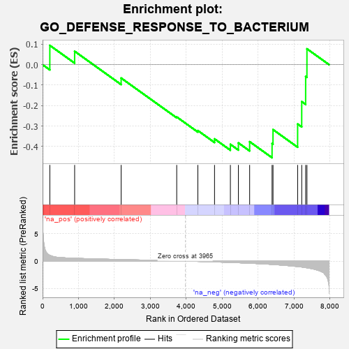
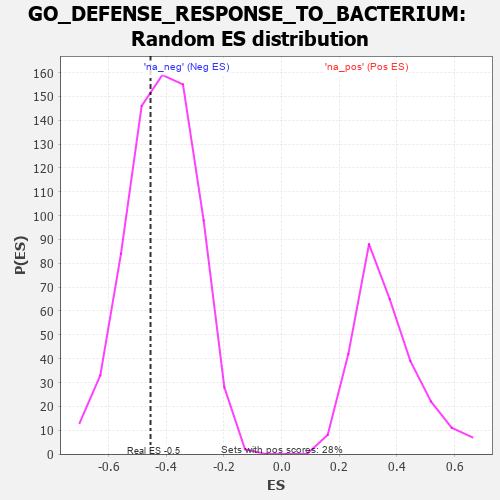

| | | Dataset | 7d |
| Phenotype | NoPhenotypeAvailable |
| Upregulated in class | na_neg |
| GeneSet | GO_DEFENSE_RESPONSE_TO_BACTERIUM |
| Enrichment Score (ES) | -0.45445716 |
| Normalized Enrichment Score (NES) | -1.0957726 |
| Nominal p-value | 0.36908078 |
| FDR q-value | 0.7559041 |
| FWER p-Value | 1.0 |
Table: GSEA Results Summary

Fig 1: Enrichment plot: GO_DEFENSE_RESPONSE_TO_BACTERIUM
Profile of the Running ES Score & Positions of GeneSet Members on the Rank Ordered List
| PROBE | GENE SYMBOL | GENE_TITLE | RANK IN GENE LIST | RANK METRIC SCORE | RUNNING ES | CORE ENRICHMENT | | 1 | BCL3 | | | 202 | 1.047 | 0.0941 | No |
| 2 | HMGB2 | | | 892 | 0.507 | 0.0654 | No |
| 3 | SYK | | | 2186 | 0.278 | -0.0653 | No |
| 4 | SYT11 | | | 3732 | 0.036 | -0.2554 | No |
| 5 | ROMO1 | | | 4320 | -0.063 | -0.3219 | No |
| 6 | RAB14 | | | 4784 | -0.155 | -0.3625 | No |
| 7 | TMF1 | | | 5225 | -0.251 | -0.3891 | Yes |
| 8 | LYST | | | 5448 | -0.307 | -0.3821 | Yes |
| 9 | TLR2 | | | 5761 | -0.395 | -0.3762 | Yes |
| 10 | ISG15 | | | 6385 | -0.608 | -0.3851 | Yes |
| 11 | MBL2 | | | 6411 | -0.623 | -0.3171 | Yes |
| 12 | RAB1A | | | 7096 | -0.993 | -0.2898 | Yes |
| 13 | MPEG1 | | | 7210 | -1.083 | -0.1804 | Yes |
| 14 | GRN | | | 7319 | -1.194 | -0.0577 | Yes |
| 15 | PLAC8 | | | 7355 | -1.223 | 0.0774 | Yes |
Table: GSEA details [plain text format]

Fig 2: GO_DEFENSE_RESPONSE_TO_BACTERIUM: Random ES distribution
Gene set null distribution of ES for GO_DEFENSE_RESPONSE_TO_BACTERIUM